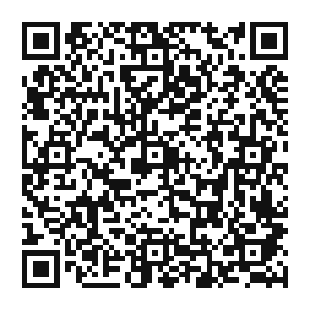

Descarga Paz Financiera en Google Play
Organiza gastos, ingresos, cuentas, tareas y notas personales.
Ficha oficial para Android. La instalación se realiza a través de Google Play.

Política de privacidad — Android y Windows
Anexo de Windows: 24 de noviembre de 2026
Esta política abarca las versiones Android y Windows desarrolladas por Anselmo Eller. Las secciones originales que siguen describen Android; este anexo establece las particularidades de Windows. La versión Windows se prepara para Microsoft Store y aún no se ha publicado. La información sobre licencias describe la integración prevista, sujeta a revisión antes del lanzamiento.
Datos y seguridad local
Windows permite guardar gastos, ingresos, tareas, recordatorios, notas, diario, metas de ahorro, recibos, audio, texto reconocido y preferencias. Las bases estructuradas se cifran localmente con AES-256-GCM; la clave se protege mediante el almacenamiento seguro de Windows (Electron safeStorage/DPAPI). El PIN de acceso opcional tiene entre 8 y 16 dígitos. No hay cuenta en línea del desarrollador ni sincronización automática de registros. La protección depende del dispositivo y no elimina todos los riesgos. La biometría Windows Hello aún no está disponible.
Micrófono, dictado y OCR
El micrófono se utiliza cuando solicitas grabar. La transcripción interna intenta usar un reconocedor local de Windows compatible con el idioma; su disponibilidad depende de los permisos, los componentes instalados y el formato de audio. Si utilizas el dictado de Windows (Win + H), su servicio de voz puede procesar información en línea según tu configuración. El OCR utiliza archivos elegidos por ti y herramientas locales compatibles. Las grabaciones no se envían automáticamente al desarrollador para transcribirlas. Para transcribir, la aplicación crea un archivo WAV temporal local e intenta eliminarlo al terminar. Un fallo o una interrupción brusca puede dejar archivos temporales en el dispositivo.
Copias de seguridad, archivos y notificaciones
Las copias portátiles se cifran y protegen con la credencial que exige el formato. Las copias Windows pueden usar un PIN propio de 8 a 16 dígitos, independiente del PIN de acceso. Las copias automáticas Pro usan la carpeta elegida y requieren que la aplicación esté en ejecución y el almacén seguro disponible; no hay copias en la nube del desarrollador. Guarda la credencial en un lugar seguro. Los PDF, TXT y otros archivos exportados pueden contener datos personales y no están protegidos automáticamente por el PIN. Las notificaciones locales dependen de los permisos de Windows; los títulos y fechas pueden aparecer en la pantalla de bloqueo.
Compras Pro y servicios externos
Se está preparando la distribución y el desbloqueo Pro mediante un pago único en Microsoft Store. Una vez implementado, Microsoft procesará el pago y la validación de la licencia; la aplicación no debería recibir los datos completos de la tarjeta. Microsoft puede tratar datos de cuenta, transacción, licencia, dispositivo y conexión según sus políticas. Las compras de Android y Windows son independientes. La versión Windows actual no incluye publicidad, AdMob, comunicados Firebase ni telemetría remota del desarrollador. Las consultas opcionales de cambio a Frankfurter usan códigos de moneda, no saldos ni notas; el proveedor puede recibir datos técnicos de conexión. Los enlaces externos se rigen por las políticas de cada servicio.
Conservación, eliminación y derechos
Los datos locales se conservan hasta que se eliminen o retiren del dispositivo. Puedes consultar, corregir y borrar registros en la aplicación; las copias y exportaciones deben eliminarse por separado. El desarrollador no puede borrar ni recuperar remotamente tu base local. Para consultas de privacidad y derechos según la legislación aplicable, escribe a moneyproapp@gmail.com. Las consultas de compra y licencia también pueden requerir asistencia de Microsoft.
Declaración de privacidad de Microsoft · moneyproapp@gmail.com
1. Aplicación y finalidad
Esta política se aplica a Paz Financiera (anteriormente MyMoney, MeuDinheiro y MiDinero), desarrollado por Anselmo Eller, identificador Android com.anspro.mymoney.app, versión 1.3.0. La aplicación ayuda a organizar gastos, ingresos, notas, grabaciones, tareas, diario y objetivos de ahorro. No es un banco ni realiza pagos bancarios.
Los registros principales se conservan localmente. No necesitas crear una cuenta en línea con el desarrollador para guardarlos.
2. Información que introduces
Según las funciones utilizadas, Paz Financiera guarda importes y fechas de gastos e ingresos, estados de pago, tareas y recordatorios, notas, diario, metas de ahorro, grabaciones de voz, texto reconocido en fotografías y preferencias de idioma, país, moneda, temas y acceso.
El PIN de acceso opcional debe tener de 8 a 16 dígitos. También se exige un PIN registrado para operaciones de copias de seguridad protegidas y para acceder a la gestión de archivos de audio. Evita escribir contraseñas bancarias o números completos de tarjetas en las notas.
3. Almacenamiento y seguridad
Los registros estructurados del perfil, incluidas finanzas, ingresos, notas de texto y tareas, se cifran localmente mediante AES-256-GCM. Las claves se guardan en un almacenamiento seguro protegido por el sistema operativo. Algunas preferencias se protegen de otra manera.
Los archivos de audio se guardan en el área privada de la aplicación, pero no se cifran automáticamente como la base de datos estructurada. El PIN, el código de recuperación y la biometría utilizan mecanismos del dispositivo. Paz Financiera no recoge ni almacena datos de huellas digitales.
Ninguna protección elimina todos los riesgos, especialmente en dispositivos modificados o desprotegidos.
El panel Diagnóstico y uso local, en Configuración, guarda en el propio dispositivo cifras aproximadas de aperturas, accesos a las funciones y operaciones locales, además de una lista limitada de códigos técnicos de error. Los contadores se guardan en las preferencias locales; los códigos se guardan en el almacenamiento seguro del sistema. No se registran PIN, importes financieros, contenido de notas, identificadores de perfiles, mensajes ni trazas de error. Estos datos no se envían al desarrollador ni a servicios de análisis y pueden borrarse por separado desde el panel. No representan instalaciones de Google Play.
4. Audio, transcripción, cámara y OCR
Con permiso de micrófono puedes grabar notas de voz de forma local. La transcripción de un archivo de audio ya grabado, cuando sea compatible, exige reconocimiento en el propio dispositivo y no permite procesar el audio por Internet. La acción aparece solo cuando el sistema detecta un modelo de idioma local instalado y compatible, aunque el formato del audio podría no ser admitido. El dictado en directo es independiente y puede utilizar servicios del sistema o de terceros que, según la configuración, procesen la voz por Internet. La disponibilidad depende del sistema, el idioma y el dispositivo.
Al tomar o elegir una foto para digitalizar una nota, el OCR se ejecuta en el dispositivo. La fotografía original no se adjunta a la nota guardada. La aplicación intenta eliminar sus archivos temporales; el sistema operativo u otras aplicaciones pueden conservar copias propias. Solo se guarda el texto que decidas conservar.
Puedes seleccionar y eliminar varias notas de texto y audio. La eliminación local no borra copias exportadas o compartidas previamente.
5. Copias de seguridad y exportación
El desarrollador no ofrece copias automáticas en la nube y la copia automática de datos del sistema Android permanece desactivada. Las copias portátiles de datos más recientes (v4) utilizan AES-256-GCM y scrypt. Según el archivo, una copia v4 puede recuperarse con el PIN original o un código de recuperación de acceso compatible. Las copias anteriores pueden seguir exigiendo las credenciales utilizadas al crearlas; cambiar el PIN no modifica los archivos antiguos. Los usuarios de Paz Financiera Pro pueden activar copias automáticas sin conexión en una carpeta local de Android que elijan (Documentos/tarjeta SD), con una clave de recuperación aleatoria e independiente de 16 dígitos. La clave se conserva en almacenamiento seguro local mientras el recurso esté activo, no se incluye en los archivos ni se envía al desarrollador y debe anotarse para recuperar los datos tras reinstalar. La aplicación intenta hacer copias cuando está abierta o al volver a ella, sin garantizar la ejecución cerrada. Los archivos .mymoney no incluyen audios; la opción automática puede crear paquetes cifrados .myaudiopack por perfil. Primero se restaura el archivo de datos y luego los paquetes de audio. Las copias anteriores verificadas se conservan si falla una nueva, y las antiguas pueden eliminarse según la retención configurada. Se mantienen los formatos compatibles v1/v2.
Los audios pueden exportarse por separado en archivos .myaudio o paquetes .myaudiopack cifrados con PIN. Restaura primero la copia de datos correspondiente y después importa el paquete de audio. Los audios compartidos directamente y los TXT del diario no están cifrados automáticamente como la base de datos.
Tú eliges dónde se guardan las exportaciones. Desinstalar la app, borrar sus datos, perder el PIN o los archivos puede impedir su recuperación. En el formato de datos v4 compatible, el código de recuperación de acceso puede permitir recuperar la copia. No sustituye necesariamente las contraseñas de archivos antiguos ni la clave independiente de las copias automáticas Pro.
6. Publicidad y consentimiento
En la versión gratuita, Google AdMob puede mostrar anuncios. Según el dispositivo, tus elecciones de consentimiento y las políticas de Google, los proveedores publicitarios pueden recoger o compartir dirección IP, identificadores del dispositivo o publicitarios, métricas de interacción con anuncios y diagnósticos para publicación, medición y prevención de fraude. La aplicación utiliza la plataforma de mensajes a los usuarios de Google (UMP) para actualizar las preferencias y mostrar mensajes de consentimiento cuando sean obligatorios en tu región. Antes de solicitar anuncios, comprueba si UMP lo permite. Cuando Google requiera una opción para revisar las decisiones, aparece Preferencias de anuncios en Configuración. Los banners se solicitan como publicidad no personalizada; aun así, pueden procesarse datos técnicos para publicación, medición, seguridad y prevención del fraude. Si no se dispone del permiso publicitario necesario, las funciones personales y financieras siguen disponibles.
Los usuarios de Paz Financiera Pro reconocido no ven anuncios de banner. El SDK de Google en Android aplica ajustes relacionados con publicidad y tratamiento por edad. Esto no impide el tratamiento independiente de Google Play ni la validación técnica de compras. Paz Financiera no envía el contenido de finanzas, notas o audios a servicios publicitarios.
Firebase Analytics, Crashlytics y Performance Monitoring son opciones independientes, desactivadas inicialmente. Si las autorizas, pueden transmitir eventos generales de uso, informes técnicos de errores y métricas de rendimiento a Google Firebase, de acuerdo con sus respectivas finalidades. Puedes retirar cada consentimiento sin perder el control de tus registros locales. Estos servicios no están diseñados para transmitir importes financieros, PIN, texto de notas, audios o copias de seguridad.
7. Compras Pro y prevención de fraude
Google Play procesa los pagos del producto permanente Paz Financiera Pro. La app no recibe el número completo de tu tarjeta. Para verificar o restaurar el acceso, envía por HTTPS al servidor de verificación de licencia en Google Cloud: identificador del producto, token de compra de Google Play, identificador aleatorio de solicitud y token temporal de Play Integrity.
El servidor comprueba titularidad, estado de compra y confirmación mediante Google Play Developer API. No recibe PIN, datos financieros, textos personales ni audios. Google Play, Play Integrity y Google Cloud pueden procesar independientemente señales técnicas de seguridad, dirección IP y registros de acceso para operación y prevención de fraude. La conservación de registros técnicos y las posibles transferencias internacionales dependen de los sistemas, ajustes y condiciones de esos proveedores. La verificación confirma licencias legítimas y ayuda a prevenir el fraude.
El acceso puede comprobarse de nuevo después de un cambio de dispositivo, reembolso o restauración. Play Integrity puede limitar compras en dispositivos no certificados o que no cumplan los requisitos de seguridad.
8. Notificaciones y permisos
Con tu autorización, la aplicación programa avisos locales que pueden mostrar títulos y fechas de cuentas, notas o tareas en notificaciones del dispositivo. Según la configuración del teléfono, algunos datos pueden mostrarse en la pantalla bloqueada. Puedes desactivarlos en Paz Financiera o en Android. La precisión depende de los permisos y de las restricciones de batería.
Los permisos de cámara, micrófono, notificaciones, biometría o selección puntual de archivos se solicitan cuando utilizas cada función. Al activar la copia automática Pro, autorizas acceso persistente únicamente a la carpeta local elegida para guardar y verificar las copias; puedes revocar ese acceso desde Android o desactivar la función. Paz Financiera no explora otras carpetas ni fotografías sin autorización.
Comunicados oficiales opcionales — Firebase Cloud Messaging
En las versiones compatibles de Android, Paz Financiera puede enviar avisos generales sobre actualizaciones, mantenimiento y novedades mediante Firebase Cloud Messaging (FCM) de Google. Esta función está desactivada inicialmente y solo se habilita cuando decides recibir comunicados desde el Centro de Notificaciones y concedes el permiso correspondiente de Android.
Con tu consentimiento, Firebase puede tratar un token técnico de registro, identificadores de instalación, el tema asociado al idioma seleccionado, dirección IP e información técnica del dispositivo y la entrega. Su finalidad es distribuir comunicados. La aplicación no incluye saldos, gastos, PIN, contenido de notas, grabaciones ni archivos de respaldo en los mensajes FCM. El desarrollador no mantiene una base propia de tokens de usuarios.
Los mensajes siguen el idioma elegido dentro de la aplicación, que puede ser distinto del idioma de Android. Al cambiar de idioma, se intenta cancelar la inscripción anterior antes de realizar la nueva. Sin conexión, los cambios o la cancelación pueden quedar pendientes hasta recuperar internet. La entrega no está garantizada; los avisos pueden mostrarse en la pantalla de bloqueo según la configuración del dispositivo.
Puedes desactivar estos comunicados en cualquier momento desde el Centro de Notificaciones. Son independientes de los recordatorios locales, Analytics, Crashlytics, Performance Monitoring y las preferencias de publicidad. Google trata los datos técnicos conforme a sus propias políticas. No se requiere la versión Pro.
9. Cotizaciones y servicios externos
El menú puede consultar cotizaciones de referencia de la API Frankfurter. Solo se envían los códigos de moneda necesarios; no se transmiten saldos, importes de cuentas ni notas. El proveedor puede recibir datos técnicos de la conexión, como la dirección IP.
Los enlaces que abres voluntariamente (YouTube, política, tienda, soporte) y las actualizaciones dentro de Google Play están sujetos a las políticas independientes de sus proveedores. Los principales servicios externos son Google (Google Play, Google Play Billing, Play Integrity, AdMob/UMP y Google Cloud) y Frankfurter, según las funciones utilizadas. La aplicación no envía datos de movimientos financieros, notas o audios como parte de las consultas de divisas ni de los anuncios. Consulta también la Política de Privacidad de Google.
10. Conservación y eliminación
Tus registros permanecen en el dispositivo hasta que los elimines, borres los datos de la app o la desinstales. El procesamiento local permite ejecutar las funciones que eliges; los proveedores externos pueden tratar datos técnicos para publicidad y consentimiento, seguridad, validación de compras y otras finalidades descritas aquí, conforme a la normativa aplicable. Configuración → Limpieza de datos permite eliminar categorías y registros del perfil activo. Debes eliminar por separado los archivos exportados y las copias guardadas en servicios externos.
Paz Financiera no administra cuentas de usuario en línea: por ello no sincroniza ni elimina remotamente tus bases de datos locales. El desarrollador no puede consultar, recuperar ni borrar esos registros a distancia. Los proveedores pueden conservar temporalmente registros técnicos antifraude según sus políticas.
11. Niños y adolescentes
Paz Financiera no está dirigido específicamente a niños. Su uso debe respetar la clasificación por edad publicada en Google Play, con supervisión de adultos cuando corresponda. No ofrece servicios financieros regulados.
12. Derechos, modificaciones y contacto
Puedes consultar, modificar o eliminar tus registros locales en la aplicación. Según la legislación aplicable, incluida la LGPD brasileña, el RGPD europeo y las normas de privacidad de algunos estados de EE. UU., puedes solicitar información sobre el tratamiento de datos personales y ejercer derechos de acceso, rectificación, supresión, oposición o retirada del consentimiento cuando correspondan. Para solicitudes sobre datos técnicos controlados por el desarrollador, cuestiones de privacidad o tratamiento por terceros, utiliza el correo indicado abajo. Las preferencias publicitarias pueden revisarse también desde la aplicación, si están disponibles, y mediante los controles del proveedor. No podemos recuperar a distancia bases cifradas que permanecen solo en tu dispositivo.
Esta política puede cambiar cuando se modifiquen funciones, proveedores o requisitos legales. La fecha de la última actualización aparecerá en esta página.
13. Responsable y contacto
Responsable de la aplicación y contacto de privacidad: moneyproapp@gmail.com (Anselmo Eller).